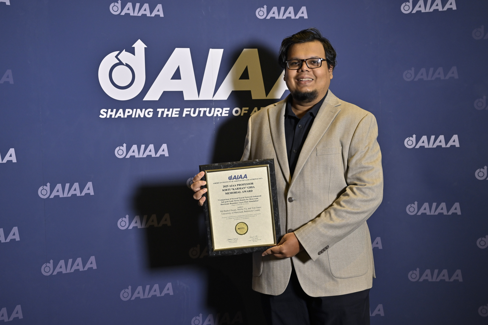

2025 AIAA Professor Kirti "Karman" Ghia Memorial Award
Inaugural recipient for best student paper, “Comparison of Several Neural Network-Enhanced Sub-grid Scale Stress Models for Meso-scale Hurricane Boundary Layer Flow Simulation,” awarded by the Fluid Dynamics Technical Committee (FDTC) at AIAA SciTech 2025.

Hasan holding the AIAA Professor Kirti "Karman" Ghia Memorial Award plaque at SciTech 2025. (Photo courtesy of AIAA)
Graduate Student Association (GSA) Professional Development Grant, December 2024, UMBC
Provided support for professional development and thesis-related research expenses.
University Technical Scholarship (2013–2017)
Bangladesh University of Engineering and Technology (BUET), Dhaka, Bangladesh.